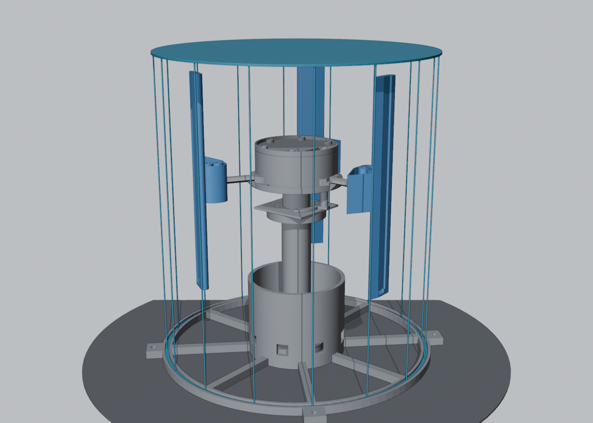
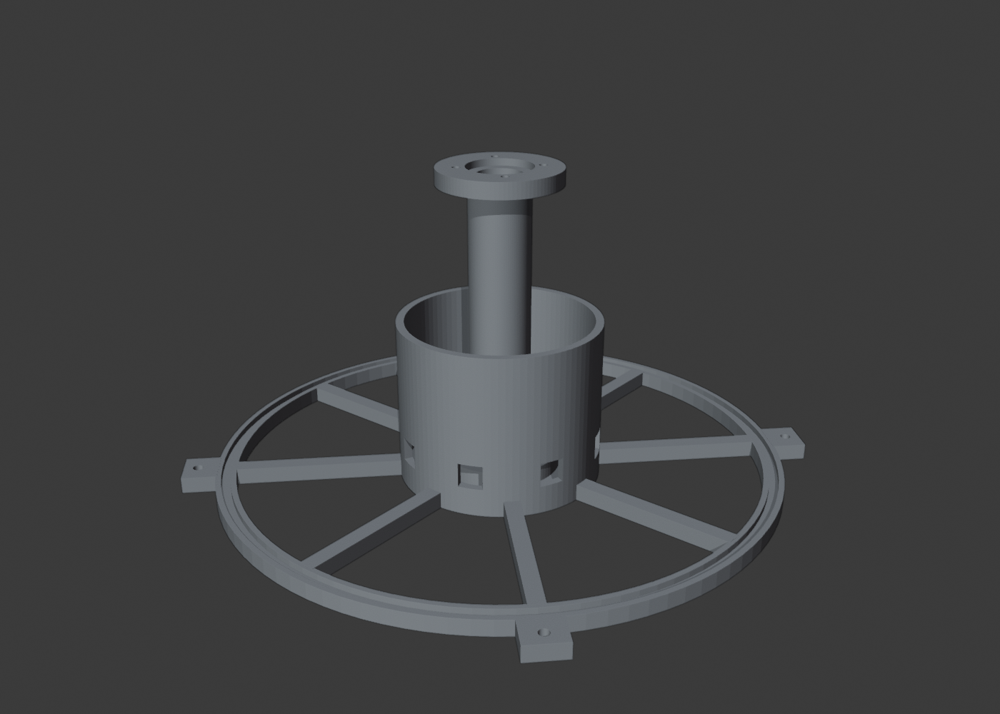
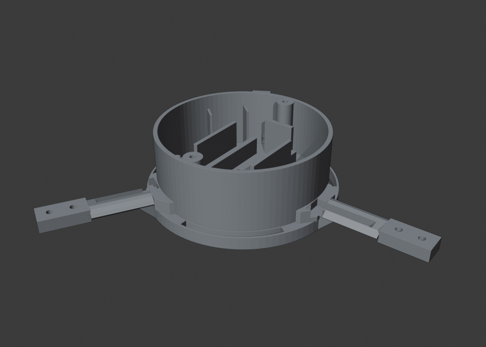
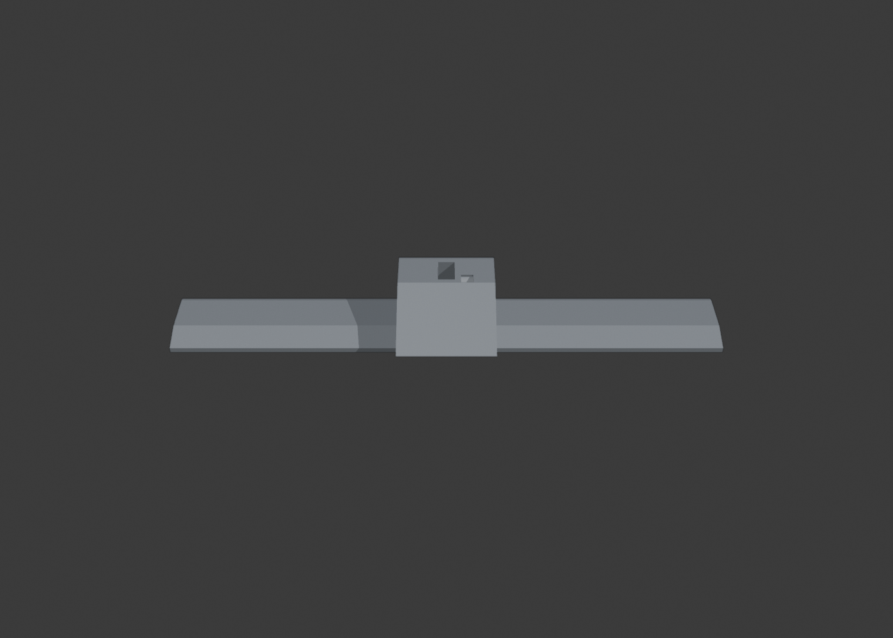
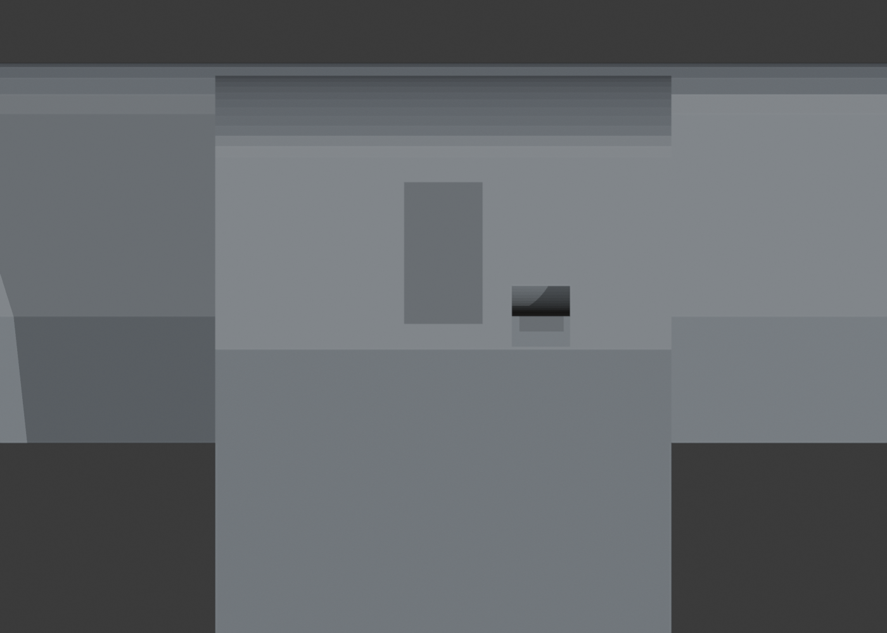
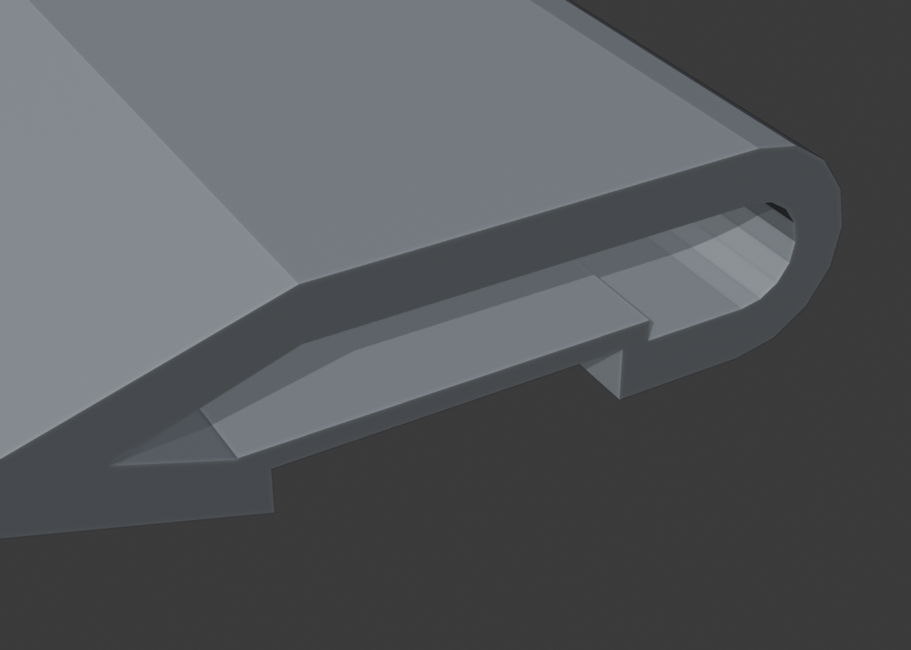
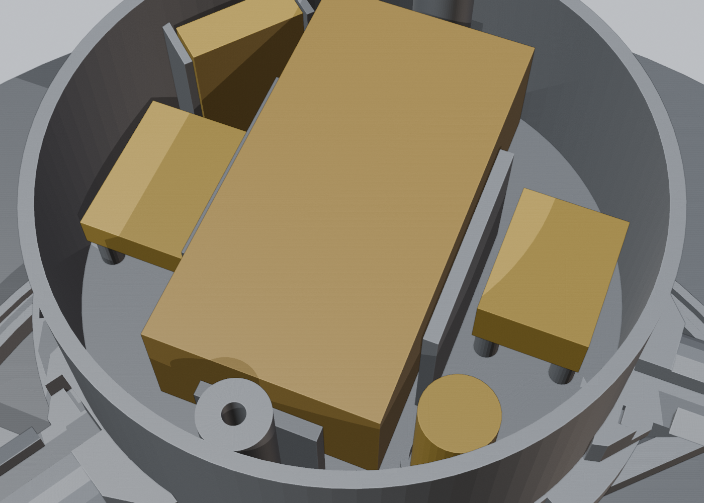
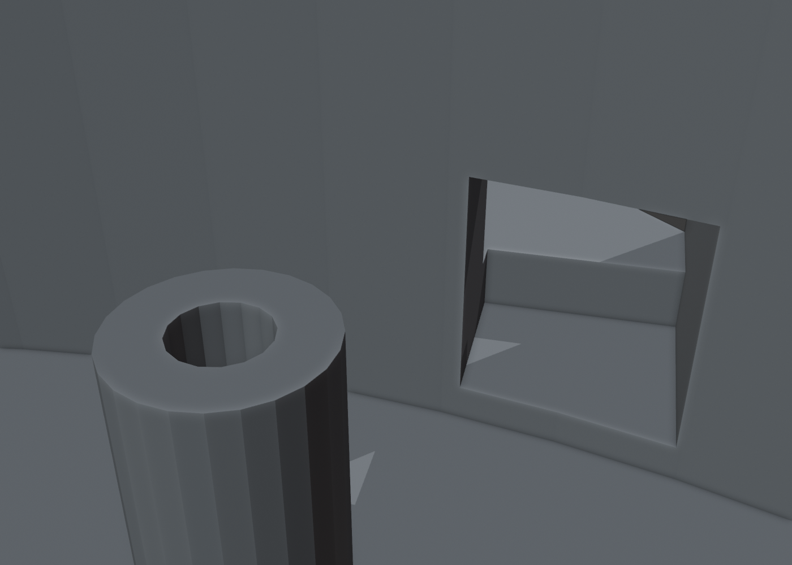

Universidade Tecnológica Federal do Paraná · Câmpus Pato Branco
Engenharia de Computação · Oficina de Integração
Apresentação do pré-projeto
Hologram
Orbiter
Display por persistência de visão
Projeto e validação experimental
- Pedro Mariano dos Santos
- Marlon Mezomo Gotardo
- Rodrigo Rodriguez Tato Gama da Silva
Orientador: Prof. Gustavo Weber Denardin
Pato Branco · setembro de 2026
Introdução§ 1 e 2.1
A imagem é escrita no ar, uma coluna por vez
Três painéis de LEDs giram e escrevem a imagem, coluna por coluna [1, 2].
Sequência desacelerada. Meta de 90 Hz sujeita à validação visual.
Cada ponto do cilindro é reescrito(1)
Objetivo e arquitetura
Um protótipo para construir e validar

Construir um display cilíndrico e verificar sua estabilidade óptica, térmica e mecânica.
- Imagem de projeto
- 29 × 180 pixels
- Envelope da imagem
- Ø208 × 201 mm
Estrutura fixa
Base e torre integradas, chapa de alumínio e motor.
Rotor
Aranha, eletrônica embarcada e três painéis espaçados em 120°.
CAD provisório. Fabricação definitiva dos painéis e operação ainda não liberadas.
Ponto de operação
O rotor desloca o ar e sofre arrasto
Três painéis em rotação
Corrente de fase estimada a 1800 rpm
Reduzir o raio de 130 para 100 mm leva a potência aerodinâmica a 45,5% do valor anterior, no modelo.
02400 rpm
80130 mm
- Velocidade do painel
- Reescrita da imagem
- Potência de arrasto
Potência relativa a 1800 rpm / 100 mm.
P/P₀ = (ω/ω₀)³ (r/r₀)³
Área e Cd fixos. Modelo sem CFD [5–7].
Projeto: 1800 rpm / 100 mm (90 Hz).
Os controles exploram o modelo. Ensaios em bancada devem validar as previsões.
Modelo no Blender
As peças que formam o protótipo



CAD paramétrico em ABS. Cupons de junta e de canal precedem o lote estrutural.
Mecânica e fabricação
As juntas concentram a carga do rotor


≈ 150 Npor painel de 42 g, a 1800 rpm
≈ 27,6 Jenergia do rotor estimada na proposta
Fluência do ABS, massas reais e transferência de carga ainda precisam de validação.
Contenção física antes de qualquer ensaio de rotação. O invólucro mostrado no CAD é uma referência.
Eletrônica e firmware
A posição do rotor sincroniza a imagem

Um pulso de Hall por volta corrige a referência angular. O ESP32-C3 calcula o instante de escrita de cada coluna.
16,2 mil atualizações/s no total para 180 colunas a 90 Hz. Relógio e dados da fita passam por deslocador de nível.
Hall A3144 alimentado em 5 V [11]. Integração de LEDs e eletrônica somente após G3, seguida de novo balanceamento.
Validação experimental
Quatro bloqueadores antes de integrar os LEDs
G3 só fecha quando os ensaios de rotação atendem a todos os critérios.
| Ensaio | Critério de aceite | Verificação |
|---|---|---|
| A / Arrasto | ≤ 20 W | Potência de entrada a 1800 rpm, após patamares de rotação. |
| B / Térmica e fluência | < 55 °C em 10 min < 0,5 mm em 1 h | Temperatura da carcaça e crescimento da ponta do painel. |
| C / Vibração | ≤ 0,20 g a 30 Hz Separação modal confirmada | Acelerômetro e FFT. Ensaio de impacto para medir a frequência natural. |
| D / Partida | 10 de 10 partidas ≤ 4,6 A de pico na fonte | Rampa do controlador com a inércia real do rotor. |
Se um critério falhar, o projeto volta à revisão antes da integração óptica.
Metodologia e cronograma
Nove semanas, com uma condição para avançar
Planejamento da proposta: 08/09 a 09/11/2026. Cada etapa termina com um portão de aceite.
- S1–S3
Projeto e fabricação
Compras, cupons, peças e qualificação dimensional.
G0 / G1 - S4
Montagem
Balanceamento e contenção antes de girar.
G2 - S5–S6
Ensaios de rotação
Arrasto, térmica, vibração e partida.
G3 - S7–S8
Integração óptica
Eletrônica, firmware e imagem de teste.
G4 - S9
Validação
Imagem, demonstração e relatório final.
G5
Dependência de fabricação
Confirmar as dimensões dos painéis antes de fechar a base e a torre, cuja impressão leva 12–18 h.
Estado atual
A revisão 3.0.5 mantém pendências estruturais. As datas são o planejamento da proposta, não registro de etapas concluídas.
Referências
Obras citadas na proposta
- BLUNDELL, B. G.; SCHWARZ, A. J. Volumetric Three-Dimensional Display Systems. New York: Wiley, 2000.
- FAVALORA, G. E. Volumetric 3D displays and application infrastructure. Computer, IEEE, v. 38, n. 8, p. 37–44, 2005.
- KELLY, D. H. Visual responses to time-dependent stimuli. I. Amplitude sensitivity measurements. Journal of the Optical Society of America, v. 51, n. 4, p. 422–429, 1961.
- TYLER, C. W. Analysis of visual modulation sensitivity. II. Peripheral retina and the role of photoreceptor dimensions. Journal of the Optical Society of America A, v. 2, n. 3, p. 393–398, 1985.
- WHITE, F. M. Fluid Mechanics. 7. ed. New York: McGraw-Hill, 2011.
- HOERNER, S. F. Fluid-Dynamic Drag. Bakersfield: edição do autor, 1965.
- HENDERSHOT, J. R.; MILLER, T. J. E. Design of Brushless Permanent-Magnet Machines. Oxford: Motor Design Books, 2010.
- INTERNATIONAL ORGANIZATION FOR STANDARDIZATION. ISO 21940-11: Mechanical vibration — Rotor balancing — Part 11: Procedures and tolerances for rotors with rigid behaviour. Genebra, 2016.
- RAO, S. S. Mechanical Vibrations. 6. ed. Harlow: Pearson, 2018.
- ASHBY, M. F. Materials Selection in Mechanical Design. 5. ed. Oxford: Butterworth-Heinemann, 2016.
- ALLEGRO MICROSYSTEMS. A3141/2/3/4 Sensitive Hall-Effect Switches for High-Temperature Operation — Datasheet. Manchester, NH, 2019.
Resultados esperados
Uma imagem estável, com operação validada
A demonstração deve reunir 90 Hz de imagem, três varreduras coincidentes e os limites dos ensaios atendidos.
≤ 20 Wpotência de entrada
< 55 °Cmotor em regime
≤ 0,20 gvibração a 30 Hz
CAD, memória de cálculo e registros dos ensaios documentam o que foi projetado e o que foi medido.
Perguntas?
Próxima etapa: fechar as pendências estruturais e qualificar os cupons.
